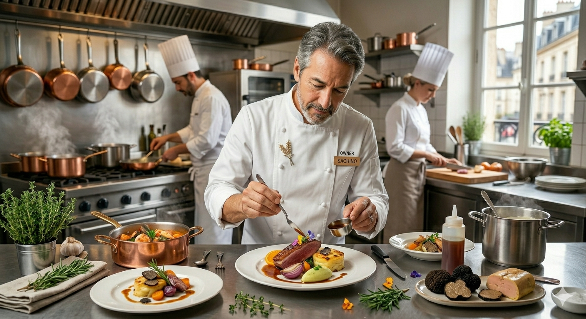

Bistro Millau
札幌・すすきのの地下に佇む、
肉料理とワインの私邸。
喧騒を抜け、地下へと続く階段。その先に広がるのは、
時間さえもゆっくりと流れる大人のための社交場。
オーナーシェフ高橋が銀座の名店で培ったのは、
食材の呼吸を読み、一皿の物語を紡ぐ技術。
すすきの駅から徒歩二分。ここは、日常を脱ぎ捨てる場所。
札幌出身。東京・銀座の最前線で十数年。
人気ビストロのシェフとして数多の舌を肥えさせてきた高橋が、
自らの理想を追求するために戻ってきたのは、故郷の地。
「形式にとらわれない、ひらめきの料理を」
2021年11月、すすきのの一角に灯した明かりは、
肉料理とワインへの飽くなき探求心の結晶です。

「至福のうにのパスタ。気さくなシェフが醸し出す、落ち着く空気感がたまらない。」
Local Gourmet
「銀座クオリティの料理をこの隠れ家で。ワインのペアリングは、もはや一つの芸術。」
Wine Lover
「二軒目に訪れたくなる、深い居心地。シェフとの会話が夜を贅沢にしてくれる。」
Solo Diner
その日召し上がった特別な料理と、ペアリングしたワインのストーリーを記した上質な特注メニューカード。旅の記憶や大切な記念日の余韻を、ご自宅までお持ち帰りいただけます。
Preparation市場に出回らない希少ヴィンテージや、シェフが厳選した裏メニューの特別ペアリングコースを最優先でご案内する会員様限定のサロンコミュニティ。
Preparation
お席に限りがございます。
銀座の伝統と北の旬が奏でる一夜を、
どうぞお見逃しなく。